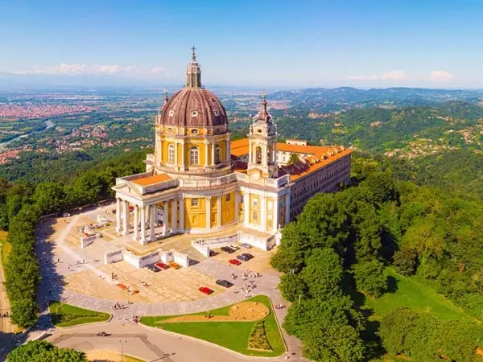

Torínó

Torinó az Alpok kapujában áll, múlt és elegancia találkozása. Kávéillattal, barokk terekkel és futballszívvel dobog a város.
Basilica Di Superga
A Basilica di Superga a város fölött őrködik, csendesen és fenségesen. Kupolája alatt történelem, kilátásában egész Torinó lélegzik.
Torínói lepel

A torinói lepel titkokkal átszőtt ereklye, hit és tudomány határán. Csendben őrzi arcát az időnek, kérdéseket hagyva maga után.
Látnivalók

Dombtetőn álló barokk bazilika, ahonnan panorámás kilátás nyílik egész Torinóra és az Alpokra. Híres történelmi emlékhely és kiváló hely naplemente megtekintésre; a bazilikához kisvasúttal(tramvia/superga finucular) is fel lehet jutni.